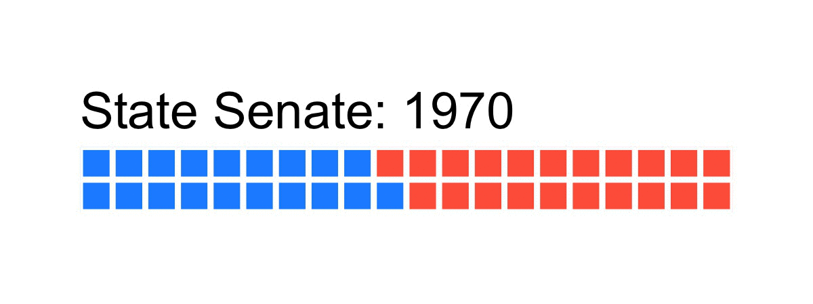
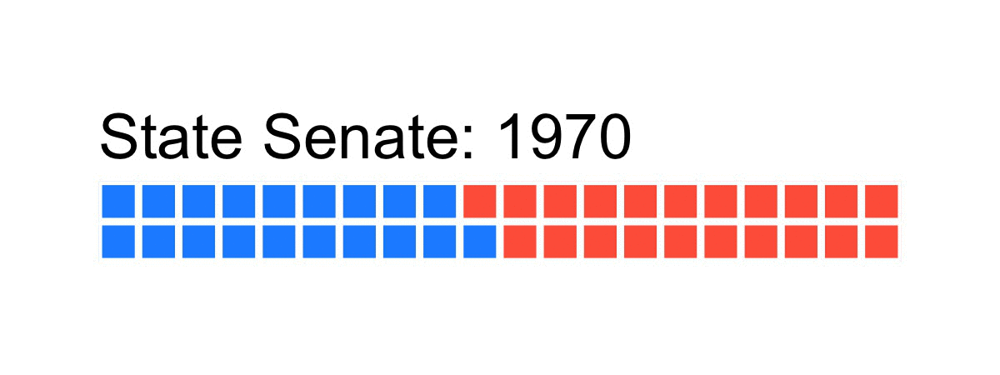
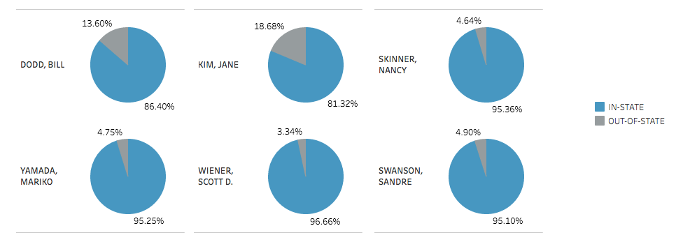

In California, Dems Often Battle Dems
State legislature turns blue
In recent decades, the California state legislature has been increasingly dominated by Democrats. Political observers point to Proposition 187, passed by voters in 1994, as a turning point in state politics. Prop 187 cut benefits to undocumented immigrants, and turned many of those immigrants against the Republican Party.
 

Primary Politics
California uses a unique primary system called a nonpartisan blanket primary, where the top two vote getters in the primary, regardless of party, move on to the general election. This system leads to situations where Democrats battle in the primary and then again in the general election. It also highlights a basic split in the Democratic Party — between progressive Democrats and moderate Democrats. The progressive/moderate battle played out in a handful of 2016 races in the California legislature, and the Hall Political Report undertook an investigation of campaign finance reports of the races, to see what we could learn about the differences between the two blocs of the Democratic Party.

In-State Money vs Out-Of-State Money
Generally in statewide races, support coming from out of state indicates powerful interests in Washington D.C. or elsewhere who wish to influence events. For this study, we looked at the percent of each candidate's contributions coming from inside California versus outside the state.
Who Gets Money From Powerful Donors?
For this study we used a quirk of the California election records system: entities like companies, unions, and PACs have a unique ID number registered with the state. Invdividuals do not. Support from ID-numbered entities gives us a clue to which candidate is supported more by the so-called "establishment" — powerful interests seeking to protect their positions.

CONCLUSION
In these three races, common patterns of moderate vs. progressive Democrats held true. In the first study, overall donations, we saw all three moderate candidates with a significant money advantage over their Progressive foes. The second study, in-state versus out-of-state money was less clear cut. Most candidates collected between three and five percent of contributions from out-of-state. We have two outliers here: Bill Dodd and Jane Kim, each above 10 percent. The final study, of where the powerful money went, is clear-cut. All three moderate Democrats got significantly more money from powerful interets than their progressive opponents.
Project made for "Data Visualization" class at UC-Berkeley Graduate School of Journalism. Project by Sam-Omar Hall, with assistance from instructor Peter Aldhous.
Data from the California Secretary of State at cal-access.ss.ca.gov/.